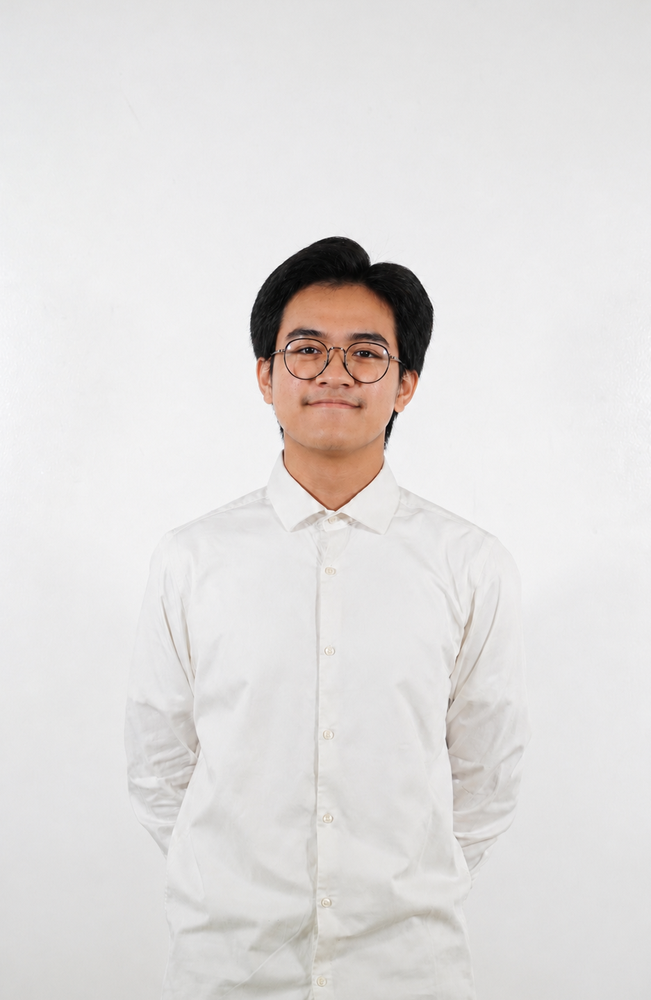

Bachelor Student · Informatics
Khumaidy Syafiq El Maududy
I am an aspiring student constatntly seeking growth and learning opportunities through many ways, whether it be doing projects, joining committees, or being a volunteer!
Just Do It.

5+
Committees
2+
Projects
About
I am a Bachelor Student in the Department of Informatics. My interest is to dive into the world of cloud computing, where I can explore how modern technologies enable businesses to store, manage, and process data efficiently while building scalable and secure digital solutions. Through this journey, I hope to gain practical experience, strengthen my technical and problem solving skills, and keep up with the rapid development of technology in the digital world.
Education
-
2025 - Present
Institut Teknologi Sepuluh Nopember
Bachelor in Informatics
-
2022 - 2025
SMA Progresif Bumi Shalawat
Science Major
Experiences
Schematics 2026
Drafted Terms of Reference (TOR) for sponsors and guest speakers, prepared event rundown and committee guidelines, as well as managing that participants are up-to-date by giving latest information through broadcast channels.
Petrolida 2026
Drafted Terms of Reference (TOR) for guest speakers, managed participant administration, as well as serving as the Master of Ceremony for a PBM session.
UKM Penalaran
Responsible for managing a design training event for new members, coordinating with several divisions to ensure that the whole committee has the same spirit for the success of the event.
Projects
- Personal Website: Developed a responsive event personal website using HTML, CSS, and JavaScript, implementing user registration and form validation to ensure accurate and secure collection of attendee information. Designed an intuitive and user-friendly interface optimized for a smooth experience across different devices.
- Music Playlist Manager: Developed a music playlist management system using data structures like stacks, queues, and deques to support efficient song insertion, deletion, searching, rearrangement, and playlist navigation.